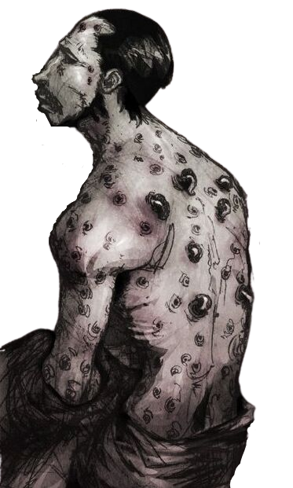

Sintomas
Os sintomas associados à doença são:
• Cansaço excessivo;
• Febre acima de 38 °C;
• Gânglios inflamados (no local da picada da pulga);
• Dores fortes de cabeça;
• Manchas roxas na pele (causada pela morte do tecido, comum no nariz, dedos dos pés e mãos);
• Dificuldade de respirar;
• Sensação de falta de ar;
• Dor no peito;
• Tosse constante, em alguns casos contendo sangue.
